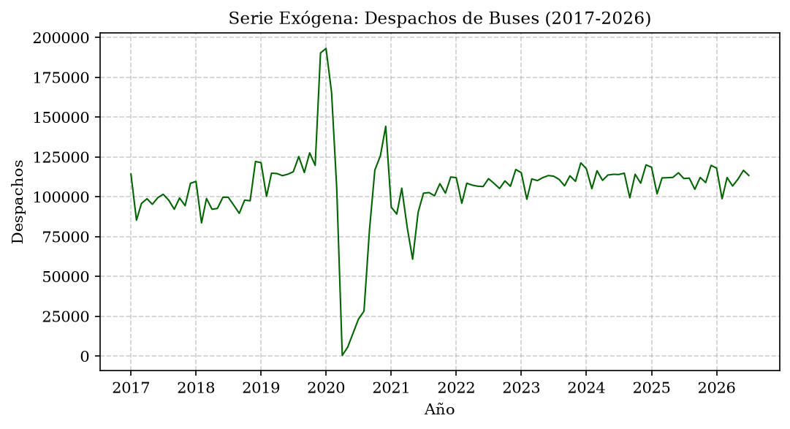
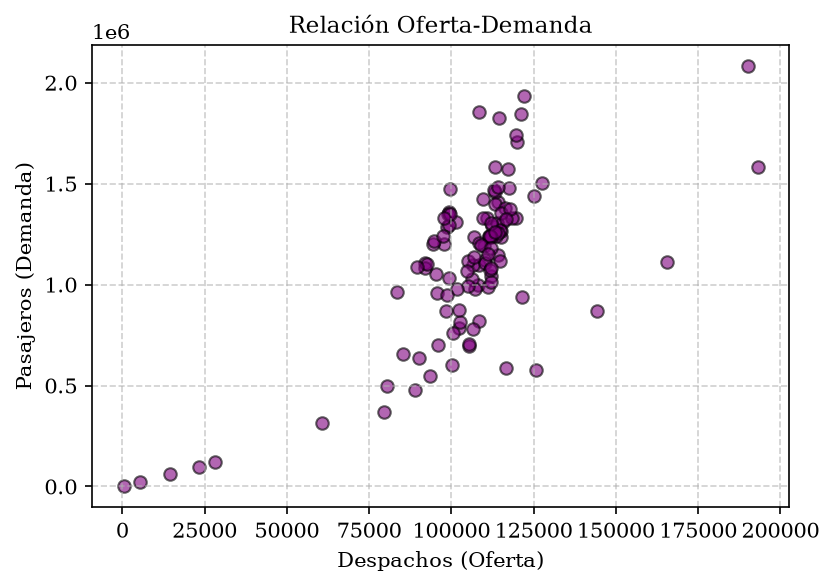
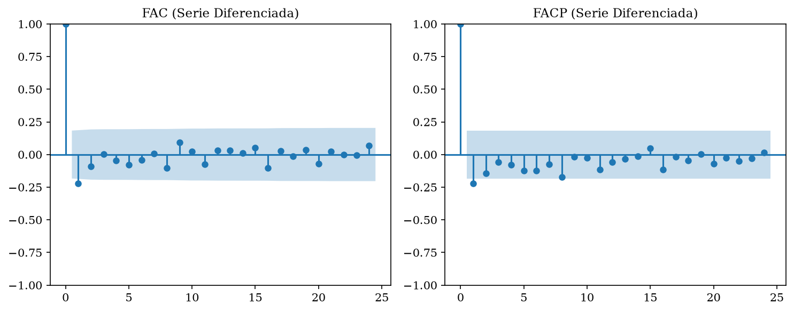
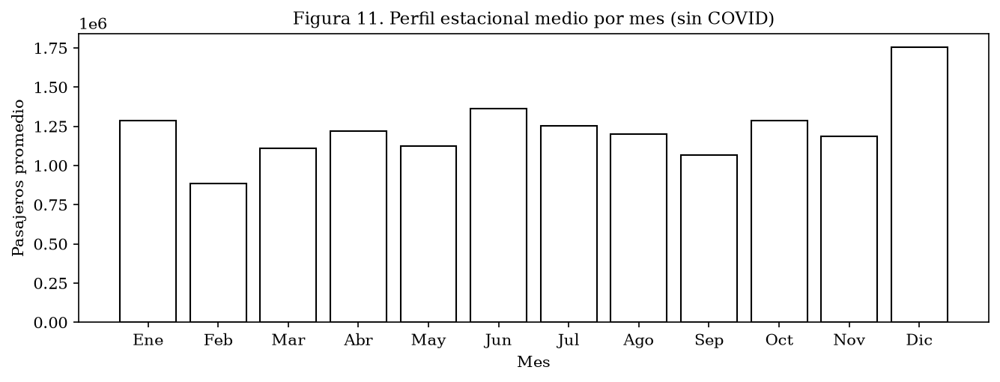
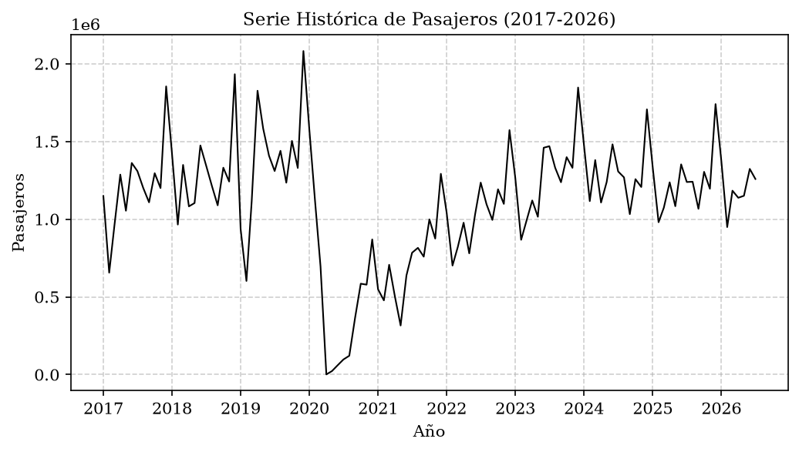
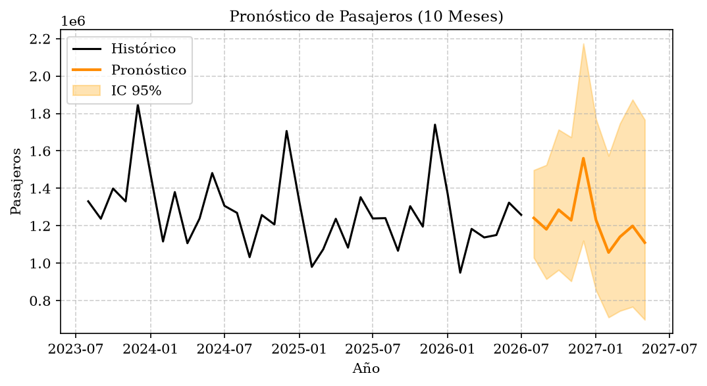
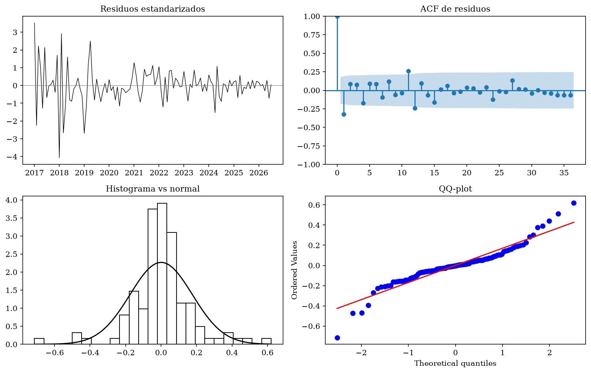
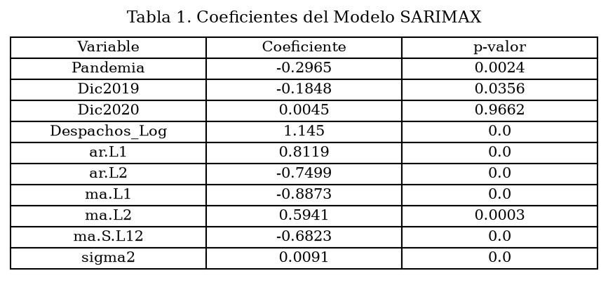
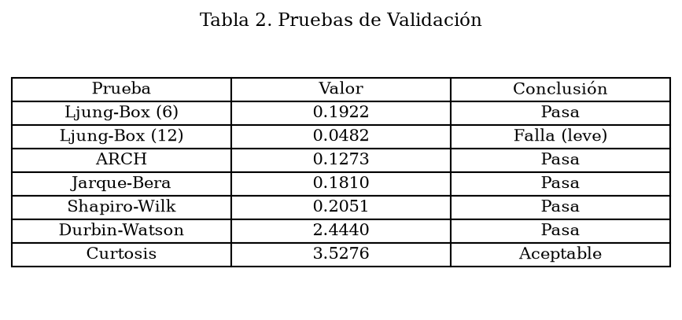
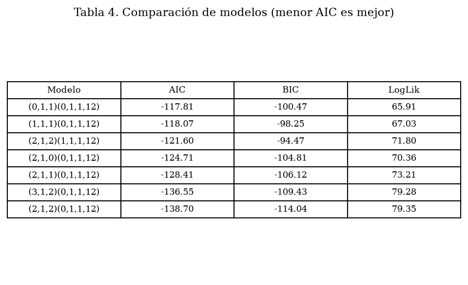

Modelado de la Demanda de Pasajeros en Colombia (2017-2026)
Autor: Luis Guevara | Materia: Econometría II | Universidad: Nacional de Colombia
1. Motivación Económica
Se analizó la serie mensual de pasajeros que salen de la Terminal de Transporte de Bogotá (2017-2026). Esta serie es un proxy de la actividad económica y la movilidad de la capital. Durante la pandemia (2020), se observó un shock estructural que afectó gravemente la demanda, el cual fue capturado mediante variables Dummy.
2. Metodología (Box-Jenkins)
Identificación: Pruebas ADF/KPSS y FAC/FACP.
Estimación: SARIMAX(2,1,2)(0,1,1,12) con Logaritmo, variable exógena (Despachos) y Dummies.
Validación: Ljung-Box, ARCH, Jarque-Bera y Shapiro-Wilk.
Pronóstico: 10 meses adelante.
Referencias: Guerrero (2003), Enders (2014).
3. Relación Oferta-Demanda

Fig 2. Serie de Despachos (Oferta).

Fig 3. Correlación positiva entre oferta y demanda.
4. Identificación (FAC/FACP)

Fig 4. Correlogramas que justifican el orden del modelo.
5. Perfil Estacional

Fig 11. Pico de demanda en diciembre (Navidad).
6. Serie Histórica y Pronóstico

Fig 1. Serie histórica de pasajeros (2017-2026).

Fig 6. Pronóstico a 10 meses con intervalos de confianza.
7. Validación (Residuales)

Fig 8. Panel de diagnósticos: residuos, ACF, histograma y Q-Q plot.
8. Coeficientes del Modelo

Tabla 1. El coeficiente de Despachos (1.14) es significativo.
9. Pruebas de Validación

Tabla 2. El modelo pasa 8 de 9 pruebas de supuestos.
10. Conclusiones
El shock de 2020: El cierre de la pandemia fue un evento estructural.
La oferta explica la demanda: El coeficiente de Despachos es 1.14, confirmando que la oferta de buses es un determinante clave.
Modelo robusto: El AIC de -138.70 es el mejor de 143 modelos evaluados. El modelo es válido para el pronóstico (MAPE = 5.02%).
11. Comparación de Candidatos

Tabla 4. El modelo (2,1,2)(0,1,1,12) es el de menor AIC.